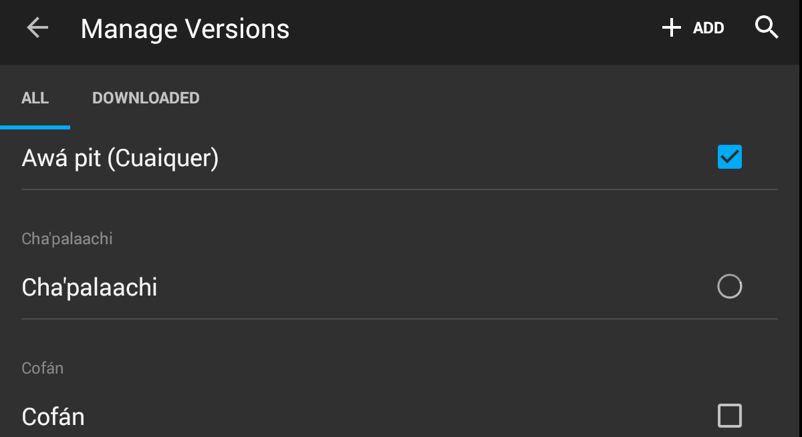
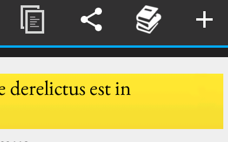
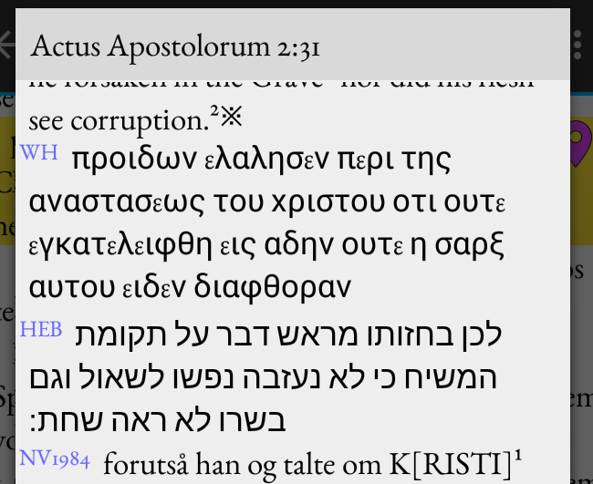
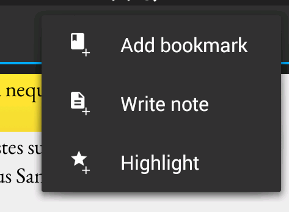
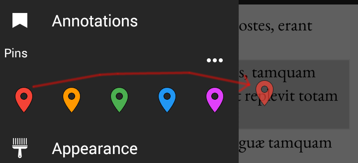

|  | Download translations by going Menu (swipe in from left) - Bible, Other versions… and ticking the corresponding box. You only need internet while downloading it. Ticked box=you have this one Spinner=you're getting it right now Empty box=you have not downloaded it, or it's deselected. |
|  | Select a verse by tapping on it. This brings up some icons top right, if there's enough screen space: 1 Copy (to clipboard) 2 Share (email, SMS…) 3 Compare (see below) and 4 Annotate (see further below) If the screen is too small to show all the icons, the rest is put into a drawer labelled "…" |
|  | Compare the verse (look it up in all your installed translations) by tapping the three stacked books. Only visible when exactly one verse is selected. You can unselect verses manually tapping them, or tap the top-left Back arrow to unselect everything. |
|  | Annotate by tapping the + sign and: 1 Add a Bookmark (you can group/tag the bookmarks also) All annotations are visible in all translations, also the ones you install after annotating a verse. If multiple verses are selected, the annotation is applied to all selected verses. |
|  | Pin a verse by sliding in the Menu, tap and hold one of the 5 pins, drag it onto a verse and release. If the pin was in use somewhere else, it is now moved to the new verse. To jump to a pinned verse, open the menu and tap the pin. |
You'll probably figure out the rest of the functions. See also more information online here.
Suggestions? Bugs? Complaints? Legal? Drop us a line at arnotixe+qibi@gmail.com.